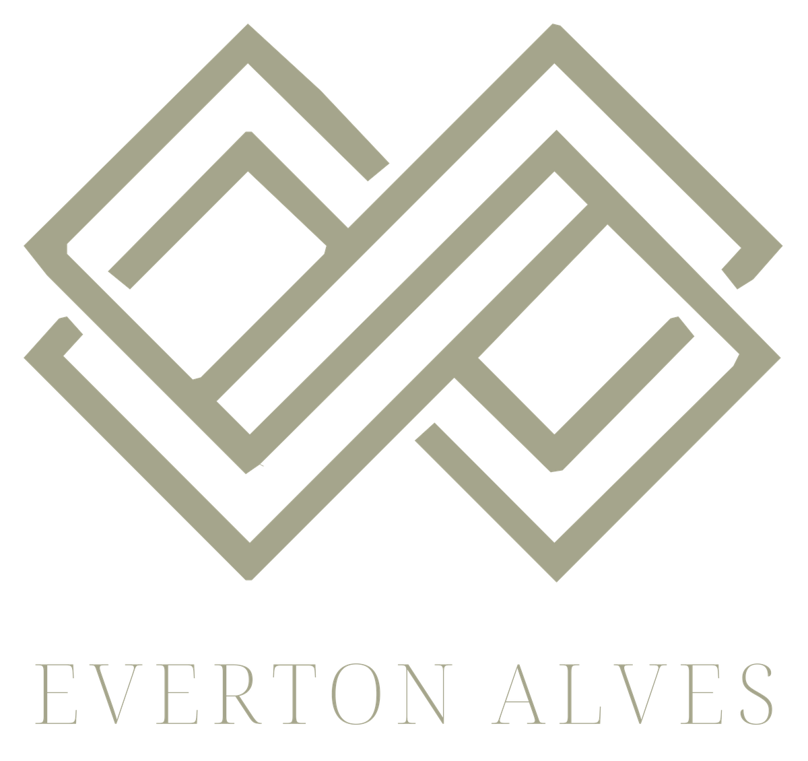

Advogado Trabalhista
Mais de 10 anos de atuação em Direito do Trabalho e experiência em grandes demandas trabalhistas, oferecendo atendimento personalizado para trabalhadores de todo o Brasil.
Fale agora com o advogadoSabemos que esse é um momento difícil e cheio de dúvidas. Mas fique tranquilo: muitas vezes o trabalhador tem direitos que não recebeu — e você pode estar entre eles. Um bate-papo rápido já ajuda a entender a sua situação, sem compromisso.
Quero saber meus direitosÁreas de atuação
Toque em cada tema para entender melhor. Se algum parecer com a sua situação, é só chamar no WhatsApp.
Passo a passo
Simples, direto e sem complicação. Você fala com o advogado do começo ao fim.
Você chama direto no WhatsApp e conversa com o próprio advogado.
Ouço a sua história e verifico com atenção o que aconteceu.
Explico seus direitos numa linguagem fácil, sem juridiquês.
Se for o caso, entramos com o processo para buscar o que é seu.
Você fica informado de cada passo até o fim do processo.
Quem vai cuidar do seu caso
Formado em Direito pela PUC-Campinas, uma das faculdades de Direito mais tradicionais do país, dediquei minha carreira à defesa dos direitos dos trabalhadores.
Acredito num atendimento próximo e humano: cada pessoa tem uma história, e eu faço questão de ouvir a sua com atenção e respeito. Meu compromisso é lutar para que você receba tudo aquilo a que tem direito.
Também atuo com Assessoria Jurídica e Imobiliária (CRECI).Não perca tempo